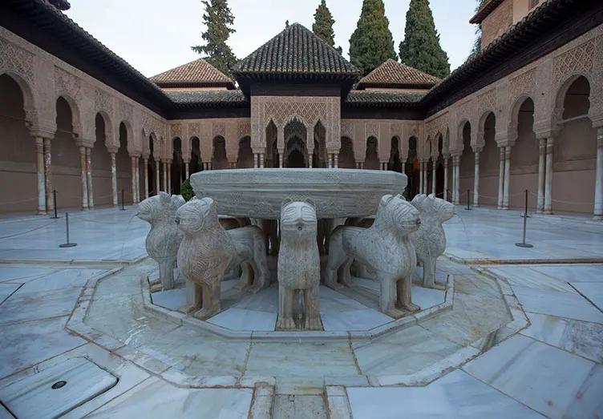
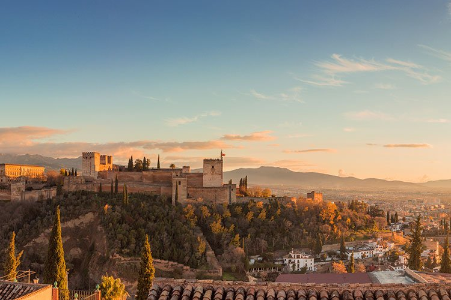
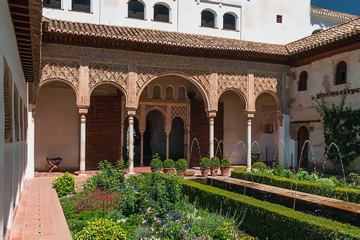
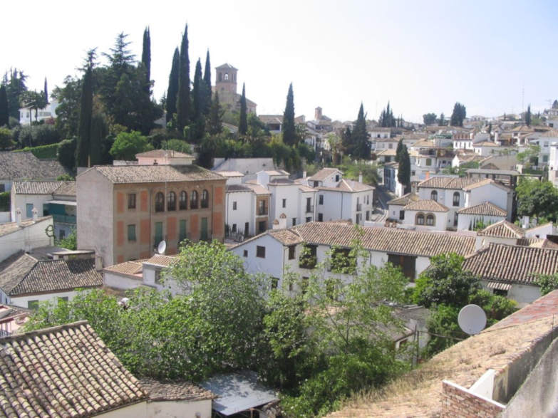
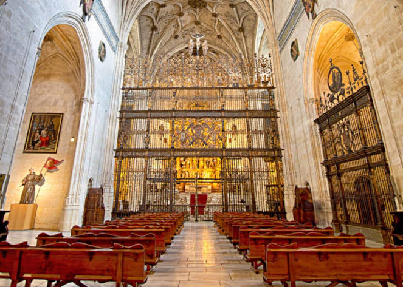

GRANADA
DEPORTE
Granada ofrece una vibrante escena deportiva con equipos de fútbol como el Granada CF y opciones como baloncesto, senderismo y esquí en Sierra Nevada.
CULTURA
La ciudad destaca por su rica herencia histórica y cultural: la Alhambra, el Albaicín y una gran cantidad de festivales tradicionales la definen.
NATURALEZA
Desde Sierra Nevada hasta los parques naturales y el río Genil, Granada es un paraíso para los amantes del aire libre y el ecoturismo.
GASTRONOMÍA
Tapas gratis con la bebida, platos como las habas con jamón o el remojón granadino hacen de la cocina granadina una experiencia única.
Sierra Nevada
Nieve, montaña y naturaleza en estado puro.
Playas de Granada
Sol, mar y relax en la Costa Tropical.
Lugares más emblemáticos de Granada

Alhambra

Mirador de San Nicolás

Generalife

Albaicín

Capilla Real de Granada
y su ubicación
¿Sabías que...?
La Alhambra estuvo a punto de ser demolida en el siglo XIX.
Granada fue el último bastión musulmán de la península, rendida en 1492.
Federico García Lorca nació en un pequeño pueblo cerca de Granada.